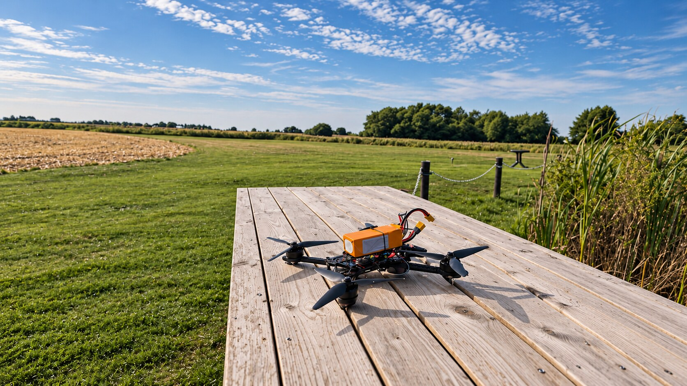
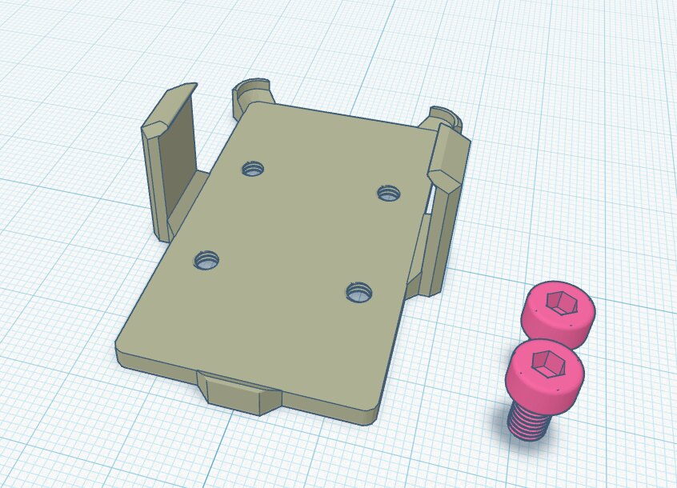
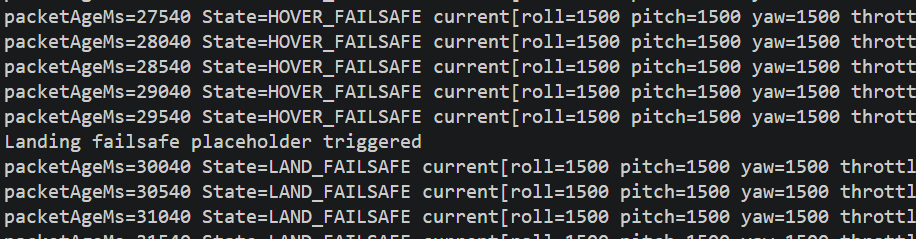

FIELD TEST / KRISTIANSTADVoice-Controlled UAV System
A modular command and safety pipeline connecting a mobile voice interface to a real flight controller through two ESP32 nodes.
I worked across firmware, wireless communication, serial protocols, telemetry, wiring and field testing. Commands travel through ESP-NOW and CRSF to an STM32 flight controller, with validation, throttle smoothing, layered failsafes and a latched emergency stop.
- 01End-to-end app → ESP32 → flight controller pipeline
- 027-second hover and 30-second landing failsafes
- 03Bench, telemetry and outdoor flight evaluation
C/C++ESP32ESP-NOWCRSFSTM32
View code ↗
